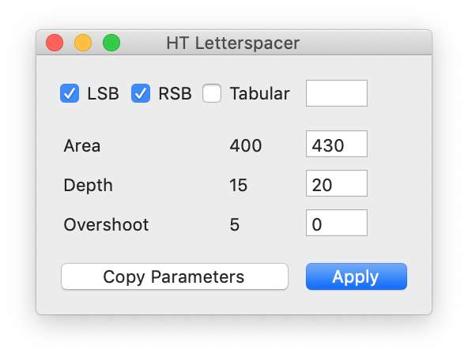

A free tool for spacing fonts
Concepts
HT Letterspacer is a tool for spacing fonts that works on finished fonts as well as during development. The first public version works as a macro for Glyphs and uses that application's glyph categories and subcategories feature, but the method is adaptable to any editor or programming language.
With HT Letterspacer, achieving consistent spacing is easy because you can define fixed spacing parameters during your type design process and focus on the letterform drawing.
By simplifying the spacing of a font, you can try different spacing options quickly without going mad.
At present, HT Letterspacer doesn't kern; it is only for setting glyph widths and sidebearings.
-
1 So it replaces the type designer's craft?
No. You have to configure and use it in what you think is the best way. You still need to know what you are doing. The default configuration will produce a reasonable result for a beginner, but it does not replace the eye of a master type designer. To achieve excellent spacing, you need to carefully configure and use the script. But achieving good results will be easier and faster.
-
2 What are the ideas behind it?
HT Letterspacer is a method for defining sidebearings based on the amount of white space or area in a glyph box, and it defines a way to measure it using three parameters per master. The parameters are set up for lowercase letters and modified by a configuration template for different groups of letters (using the glyph categories in Glyphs). There is a script version with a window where you can apply specific parameters to selected glyphs. The area entered, the zone measured and the depth from each glyph's sides will be equalised for all the glyphs in a group.
You can use the script based on a template where each category of glyphs has a number that changes the area parameter proportionally, to produce a general spacing that looks good. Alternatively, you can work by applying specific parameters manually to different groups of glyphs, on the fly. The more you put your eye and hand into the process, the more accurate the results. HT Letterspacer allows you to work on groups of glyphs, reducing the time and effort needed to achieve consistent spacing.
It works with large families and many masters. If you've changed your mind late in the process, or you want to adapt your fonts to a new purpose, redesigning the spacing scheme of the entire typeface family is easy. The results can be combined with your type designer's eye as much as you wish.
With HT Letterspacer, it is possible to work on tabular or fixed-width glyph groups (like tabular numbers) too, on a case-by-case basis. For monospaced fonts, you can set the script to a global tabular mode.
HT Letterspacer is a tool for type designers. There are no magic parameters, and each designer can run their own experiments to achieve different results and find their own way to use it for different purposes. Spacing a font is a matter of design, where the designer must make many decisions based on the proportions of letters, the general look, the role of tabular glyphs, and many other factors.
-
3 Project History
Andrés Torresi is the initial and primary author of this tool. Soon after joining the postgraduate course in typeface design in Buenos Aires in 2009, he began research to find a simple, semi-automated method to set glyph sidebearings that could work at any moment during a project and that the type designer can control. Today HT Letterspacer is the result of this research, and has been thoroughly tested by Andrés and Juan Pablo del Peral at the HT Fonts foundry, as well as by other designers on Latin, Greek, Cyrillic and Devanagari designs. Experiments with Latin fonts by several other type designers around the world were conducted during development, and each said that the HT Letterspacer program produces great results.
At ATypI 2015 in São Paulo, Andrés approached Dave Crossland to discuss ways of funding the project to make it available under the GPLv3 licence. Andrés wanted to invite other type designers and software developers to use, study, share and improve the tool, because with peer review it can grow beyond what he can do by himself and become a basis for newer and better approaches to font spacing. The tool was used and tested privately by the Google Fonts team and finally released for free at ATypI 2016, with sources at https://github.com/huertatipografica/HTLetterspacer
We want to thank Google for making it possible to open this up to the community.
Usage
-
1 How do I install HT Letterspacer?
In Glyphs 2 you must:
-
Open Glyphs Preferences , navigate to Addons/Modules and press Install Modules.
-
Go to Script/Open Scripts folder and close Glyphs.
-
Download the latest version of HTLetterspacer and put the
HTLetterspacerfolder into the Scripts folder that appears in the previous step. -
Open Glyphs and you will see the scripts under Scripts/HTLetterspacer
In Glyphs 3 you must:
-
Open Window/Plugin Manager
-
In the Modules section, install Python, FontTools, RoboFab and Vanilla

-
In the Scripts section, install Letterspacer

-
Restart Glyphs
-
Open Preferences and select Glyphs in Addons/Python version

-
Now you can use the scripts by navigating to Scripts/HT Letterspacer
-
-
2 What do I need to set up to use it?
To use the script you need two main things:
-
Declare custom parameters on each master of your
Glyphs file, or a general default one in the script
code. The parameters are
paramArea,paramDepthandparamOver. -
A configuration file in the same folder as your
Glyphs file, named like
yourfontname_autospace.py, with all the glyph categories, their area values and a reference glyph to define the vertical range over which the group will be measured. If there is no file in the same folder, or its name is incompatible, you will get an error. -
To create a proof glyph called
_areaswith the measured outlines when used on a single glyph, setdrawAreas = Truein the script. This is useful if you want to check what you are measuring in a particular case. -
To work with fixed-width fonts by blocking the
advance width, set
self.engine.tabVersion = Truein the script. - If you want to use it differently at different times, just duplicate the script with different configurations (with UI, tabVersion or createProofGlyphs) and change the menu name at the beginning. In this case, it is highly useful and recommended to assign keyboard shortcuts to the different script versions in your macOS system configuration.
-
Declare custom parameters on each master of your
Glyphs file, or a general default one in the script
code. The parameters are
-
3 Parameters
Parameters are declared in the master custom parameters box, in the font info, for each of the masters where you want to store the values.

You can tune the parameters with the HT Letterspacer UI and press Copy Parameters. After that, you can paste the custom parameters into the active master: Font Info/Masters.
If the master doesn't have the appropriate custom parameters, or the parameter name differs from what is required, the script will use the default values from the source code. Check the example files to see it configured.
Once the script is executed, it will output the results in the macro window, telling you whether it is using the custom parameters or the default parameters.
Parameter 1: paramArea
The
paramAreaparameter lets you define how much area (measured in thousands of units) you want between the lowercase letters inside the x-height. A font suitable for text at 1000 UPM typically uses a value between 200 and 400.


Parameter 2: paramDepth
The
paramDepthparameter (measured relatively as a % of x-height) lets you define how deep into open counterforms you want to measure the space, from the extreme points of each glyph to its centre. This parameter will affect rounded or open shapes. For example, a square with x-height has no depth — its side is vertical, and this value won't affect it.


But a triangle with x-height (a circle, a c-shape or a T) has a long distance and a large amount of white from its extreme points or sides to the centre of the letter. Our eyes don't pay attention to the whole area, so the program doesn't either. But you need to decide how much of this "big white" you want to measure by setting up this parameter.
Depending on the design, this value moves between 10 and 25 (per cent of x-height).
Parameter 3: paramOver
The
paramOverparameter expands the vertical range or height over which you measure the space, above and below the shape, by a certain % of x-height. It allows you to make slight differences when a sign has outlines that exceed the height of its group of letters, typically ascenders or descenders. For example, in a sans-serif font, a dotless /i/ and /l/ could have exactly the same shape between the baseline and the x-height line. Setting an overshoot will expand the range up and down and will result in a different calculation of space for each sign. In this case, the sign with ascenders (the /l/) will end up with looser spacing, and the difference depends on the size of the overshoot.This parameter is optional and depends on what you want to do with it, but it is intended to be used similarly to an overshoot.
-
4 Configuration file
Glyphs 2 and 3 incompatibility
Glyphs has changed the way it classifies characters. Hence, config files generated in Glyphs 2 will produce inconsistent results in Glyphs 3.
If you have updated your workflow to Glyphs 3, we strongly recommend deleting the old (Glyphs 2) config files and letting the script regenerate the new ones from scratch. This will make it easier to replicate your preferences in the new version.
A text file in the same folder as the Glyphs file defines all the different alterations for each category of signs, as well as a reference sign that defines the height or vertical range of the sign group. For example, the lowercase vertical range could be defined with
x, uppercase withXorH, small caps withx.sc, numbers withone, and so on.Config values and rules
Each line of the configuration file contains a set of rules to apply to a group of glyphs. Lines should be ordered from general to specific rules. Each field on the line should be separated by a comma, with a trailing comma:
Script, Category, Subcategory, value, reference glyph, name filter,
Item Description Script The name of the script type. Asterisk *means allCategory The name of the Glyphs category. For lowercase glyphs, it is Letter. Subcategory The name of the Glyphs subcategory. For lowercase glyphs, it is Lowercase. Value The number or coefficient of variation that changes the area parameter in each category or rule. In this case, the area parameter will be multiplied by 1. If you set a paramArea of 400 and this value is equal to 2, it means that the area applied will be 800. In this version of the script, only the area parameter is altered by this number. Reference glyph The name of the glyph that defines the vertical range or area over which spacing will be measured. For lowercase we will use x, but you can use any other glyph with the same height, lower and higher points. (Note: it seems silly to define this if we already have values such as x-height or cap height in the font. But it is done this way to keep it open to any other group of glyphs without standard values in the font, such as small caps, numbers, superscript, Devanagari, and so on.)Filter You can filter the rules by any suffix or part of the glyph name. *meansall. For example, you can constrain the rule just to the ordinal glyphs by writingordin this rule. It will then be applied toordfeminine,ordmasculineandmordor, if you have this last one.A simple example of the first four lines of a config file for a given font:
*,Letter,Uppercase,1.5,H,*, *,Letter,Smallcaps,1.25,h.sc,*, *,Letter,Lowercase,1,x,*, *,Letter,Superscript,0.7,ordfeminine,*,A default config file is provided to make the process easier. You must rename this file so it has the same name as your font plus the
_autospacesuffix. For example, if your file is calledmyserif.glyphs, your config file should be renamed tomyserif_autospace.py.You can activate or deactivate lines by writing a hash (#) at the beginning of the line, just as in Python. Each line must contain the six values separated by commas; otherwise it will result in a traceback error or misconfiguration.
Once the script is executed on a selection of glyphs, it will output the results in the macro window, showing whether it is using the custom parameters or the default parameters, and which line of the config was applied to each glyph. This way, you have control over what the script is doing and whether it is applying the line you want.
If a glyph doesn't match any line, the area parameter will be applied and multiplied proportionally to the glyph's height.
Examples
You can download our example source files from our GitHub repository .
The Telder HT Pro family's spacing was done around 98% with the tool, plus a small 2% of post-adjustment. The family was drawn in parallel with the development of the tool.
These videos are from a previous low-performance version and will be updated soon :)
This is a screen recording showing the script being applied to two different fonts/families:
Contribute
We want this tool to be open and free to the community, and to receive feedback and improvements from other designers. You can contribute on our GitHub repository .